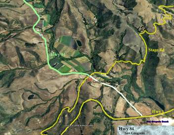

Week 5: Hwy 84/WOLH
27 Oct 2007
|
2007 Low-Key Hillclimbs Week 5: Hwy 84/WOLH 27 Oct 2007 |
|  |
| Aerial photo of Hwy 84/WOLH, courtesy of Stanford Cycling |
We chatted for a minute and watched Mark Anderson dash across. He pulled up, looking a bit gray. I asked him how he did and he opened up and out gushed breakfast, by all appearances quite a calorie-fest.
From near the Pacific Shore in San Gregorio, today's route heads eastward along windswept Highway 84, Here's a rare opportunity for the flatlanders to shine: riders with higher sustainable power, but maybe a bit more mass than those who thrive in the hills. The road heads ever so gradually upward, away from the coast, towards the redwoods.
In La Honda, we'll take your split time, giving the flatlanders their measure. But then, of course, everything changes. It's back to the hills. Back to where Low-Key calls home.
Here, 7.5 miles from the start, the road gradually, gracefully, turns upward. Still, West 84 is the shallowest climbing of this year's series, with only 770 vertical feet in the 3.9 miles to the OLH turnoff.
It is here, at West OLH, the climb truly comes into its own. The narrow road winds through dense redwoods, spectacular views of the hills and, beyond them, the glorious Pacific, competing for attention with the task at hand. 2.6 miles after the road begins, almost too soon for all its glory, you arrive at Skyline Boulevard, and the finish.
And please, watch your step. Who knows what earlier riders had for breakfast...
Our insurance demands it: helmets are required. Sorry kids, no exceptions!
We will meet at the San Gregorio store in San Gregorio, approximately 1 mile inland from the intersection of Highway 84 and coastal Highway 1, at the intersection of Highway 84 and Stage Road. Please park away from the store (there's plenty of parking available near Nighway 1).
| stats | distance: 7.5 miles to Pescadero Road 3.9 miles on to Old La Honda Rd 2.6 miles on to finish 14.0 miles total climbing: 340 feet to Pescadero Road (0.9%) 770 feet on to Old La Honda Rd (3.7%) 580 feet to finish (4.2%) 1690 feet total (2.3%) |
| format | time trial |
| time | reg 9:15 - 10:00 start 10:10am |
| coordinator | |
| aerial view | Stanford Cycling #1 Stanford Cycling #2 Stanford Cycling #3 Stanford Cycling #4 Stanford Cycling #5 Stanford Cycling #6 |
| route profile | Peterson & Kluge, 1984 |
| weather | Weather Underground Weather Bonk |
| registration form |
PDF release form |
| entry fee | $10 free for juniors 2 free for volunteers free for coordinators |

{kind=link}
{kind=link}
{kind=link}
{kind=link}
{kind=link}
{kind=link}